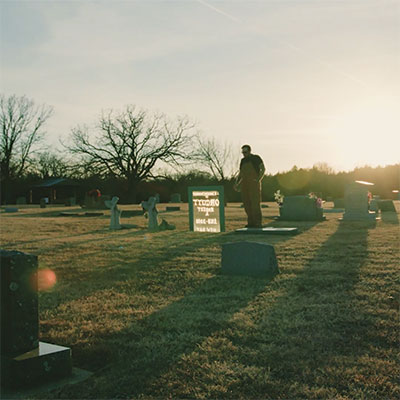
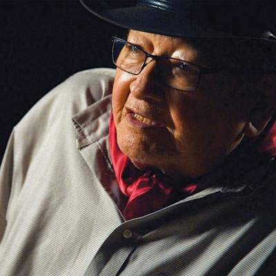
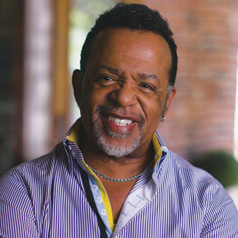

Take two
Inside the 2019 Circle Cinema Film Festival

The 2nd Annual Circle Cinema Film Festival kicks off July 11 and runs through July 15.
Valerie Grant
What started last year as a 90th birthday bash has become a flagship anchor for Tulsa’s iconic independent theater. The 2nd Annual Circle Cinema Film Festival kicks off July 11 and runs through July 15. It’s the kind of Tulsa movie-going experience that only the Circle can provide.
Following last year’s success, Circle Cinema President Clark Wiens and Film Programmer Chuck Foxen realized that Tulsa’s sole independent theater had a unique ability to present indie and local cinema with Oklahoma roots in a whole new way, and that people would show up for it.
“Every year we get the opportunity to screen films on the festival circuit,” Foxen said. But not all receive distribution or have an opportunity to fit into Circle’s schedule. “The Circle Cinema Film Festival allows us to program about three months of films into a week-long celebration.”
It’s also a chance to showcase local talent. “Every film has a special guest and an Oklahoma connection,” Foxen said.
From four world premieres to other acclaimed movies that have debuted at prestigious festivals like Sundance and South by Southwest, Foxen is excited about “a kick-ass lineup” that ranges from feature films to documentaries to shorts, along with a range of after-party blowouts and can’t-miss special events.
CCFF All Access Pass $175. Individual screenings $12 unless otherwise noted. All events are ticketed except for those listed as free. For tickets and more information, visit the Circle website at circlecinema.org.
Thursday, July 11
Edgecombe (2018) – noon
Directed by Crystal Kayiza | Documentary Short | Meet the Filmmaker
This documentary examines how the traumatic history of the African American experience continues to haunt, repeat and reinvent itself in rural black communities. Jenks High School film teacher Clifton Rapheal will moderate a discussion with Crystal Kayiza, a Jenks graduate, about the making of her film. A “Kitchen 66 box lunch” will be provided with each ticket purchase. Read more about this screening.
Red Dog (2019) – 7 p.m.
Directed by Luke Dick | Documentary Feature | Filmmaker Q&A
Luke Dick interviews his mom and other regulars at a notorious Oklahoma City strip club in this hilarious and shocking story of dancing, drugs, danger and a never-ending party. Q&A with Luke Dick follows. TU student short film La Fleur, directed by Jack Dean, will play prior to this Opening Night feature presentation. Read more about this screening.
The Outsiders (1983) – 7:30 p.m.
Directed by Francis Ford Coppola | Narrative Feature | Walk of Fame presentation
The Tulsa-set timeless classic returns to Circle Cinema. At 6 p.m., in partnership with the Oklahoma Hall of Fame, Coppola’s Academy Award-winning producer Gray Frederickson will be on hand for a special Walk of Fame dedication followed by a “Conversation with Frederickson.” (Walk of Fame / Conversation exclusive event available only to a limited amount of all-access festival ticket holders.)
Opening Night Party – 9:30 p.m.
Following the screening of The Outsiders, join the “Greaser or Soc” themed After Party at the Ambassador Hotel. DJ sets by Danny Boy O’Connor and Speed Bump, along with snacks, a cash bar and special guests.
Friday, July 12
Bluebird (2019) – 7 p.m.
Directed by Brian LoSchiavo | Documentary Feature | Filmmaker Q&A
Dubbed Nashville’s accidental landmark, The Bluebird Café has played host to emerging singer-songwriters including eventual megastars like Taylor Swift and Oklahoma’s Garth Brooks. Q&A follows with Bluebird Café general manager, film co-producer Erika Wollam and producer/director Brian LoSchiavo.
Kids (1995) – 9:30 p.m.
Directed by Larry Clark | Narrative Feature
A provocative, graphic look at the lives of teenagers in New York City (directed by Tulsa native Larry Clark and written by Harmony Korine). Scott Stulen from Philbrook Museum, which is currently hosting a Larry Clark photo exhibit, will introduce the film.
Friday Night After Party – 8:30 p.m.
Republican Hair performs at on the outdoor stage at Bar 473, with opening act David Horne and the David Hornes. $5 at the door and free for Circle Cinema Film Festival badge holders.
Saturday, July 13
HANSON 360 (2019) – Free to screen from noon to 8 p.m.
Directed by Mark Steele | VR 360 Experience | World Premiere
This free 360 Virtual Reality experience (available in the Circle gallery) takes the viewer into Hanson’s 3CG Records studio for a private session as Tulsa’s brotherly pop-rock trio records their single “Compromise.” Produced by Tulsa-based Steelehouse Productions.
Okies in Silent Film (1920s) – 11 a.m.
Silent Era Filmmakers | Film Archive Presentation | Free
This curated retrospective of clips showcases the six Oklahoma actors from the Silent era, set to live musical accompaniment on Circle’s 1928 theatre pipe organ. Presented with community partner the American Theatre Organ Society (Sooner State Chapter). Hosted by Dr. Joseph Rivers, Coordinator of Music & Film Scoring and Film Studies Dept. Chair, University of Tulsa.
Student Shorts: Program A – noon
Young & Emerging Filmmakers | Student Shorts Program | Free
The first of two programs comprised of short films made by local high school and college students. Hosted by Katie Hader.
Oklahoma Shorts – 1 p.m.
Oklahoma Filmmakers | Documentary Shorts Program | World Premiere

Terlton (2019) – directed by Sterlin Harjo. A World Premiere presentation, this stirring documentary is a testament to the power of community. Q&A follows with Harjo. Read more about this screening.
The Third (2019) – directed by Kyle Bell. The inspiring story of Lindy Waters III, a Cherokee/Kiowa basketball player for the Oklahoma State Cowboys. Q&A follows with Waters and Tulsa filmmaker Kyle Bell, who was recently selected for the 2019 Sundance Native Filmmakers Lab.
The Stand-In (2019) – directed by Yousef Kazemi. Tension hovers over a wedding for Bryan and his partner Jack when Bryan’s biological mother refuses to attend. Inspired by true events.
The Grave (2018) – directed by Kyle Roberts. A crusading reporter becomes a dark avenger against local oppressors who consider themselves above the law in this noir set in Oklahoma City during the 1920s.
All We Have is Now (2019) – 2:30 p.m.
Directed by Josh Downing | Narrative Feature | Filmmaker Q&A | World Premiere
Filmed in Oklahoma, a seemingly monotonous weekend turns toxic for three different relationships that converge on one fateful night. Q&A follows with Tulsa writer/director Josh Downing.
Juice: How Electricity Explains the World (2019) – 4:30 p.m.
Directed by Tyson Culver | Documentary Feature | Filmmaker Q&A | World Premiere
From stateside cities like Manhattan and Boulder to international locales like Beirut, Reykjavik, Kolkata and San Juan, Juice explores the human story of electricity and why power equals power. Q&A follows with writer/director Culver and Tulsan co-writer Robert Bryce.
To the Stars (2019) – 5 p.m.
Directed by Martha Stevens | Narrative Feature | Q&A
Filmed and set in Oklahoma, Tony Hale (Veep), Malin Akerman (Billions), and Shea Whigham (Boardwalk Empire) star in this drama about a withdrawn farmer’s daughter who, facing small town scrutiny in the 1960s, forges an intimate friendship with a worldly but reckless new girl. Q&A follows with representatives from the Oklahoma Film and Music Office.
Words From A Bear (2019) – 7 p.m.
Directed by Jeffrey Palmer | Documentary Feature | Filmmaker Q&A
Equal parts documentary and spiritual journey, this intimate portrait examines the poetry, prose, art and life of Pulitzer Prize-winning Kiowa writer Navarro Scott Momaday. Q&A follows with filmmaker, moderated by Tulsa writer and literary activist Teresa Miller. Read more about this screening.
Arrows of Outrageous Fortune (2019) – 8 p.m.
Directed by Mickey Reese | Narrative Feature | Filmmaker Q&A
OKC filmmaker Mickey Reese continues his prolific annual output of signature bizarre, off-beat dark comedies with this story of an estranged son who is granted a mansion in the will of his deadbeat (and now dead) father. The mansion also happens to be filled with insane women. Filmed in Oklahoma. Q&A follows with Reese.
Slumber Party X – beginning at 10 p.m.
Horror Movie Marathon | Narrative Features | All Seats $30
Friday the 13th Part III (1982) in 3D, Tourist Trap (1979), Nightbreed (1990), StageFright (1987) and a 35mm print of The Texas Chainsaw Massacre Part 2 (1986).
Sunday, July 14
Why Can’t I Be Me? Around You (2019) – noon
Directed by Harrod Blank & Sjoerd Djik | Documentary Feature | Filmmaker Q&A
An inventor/mechanic/drag racer living in Albuquerque, New Mexico, Rusty Tidenberg embarks on a journey of gender transition. Q&A follows with producer/director Blank and Rusty Tidenberg.
Student Shorts: Program B – noon
Young & Emerging Filmmakers | Student Shorts Program | Free
The second of two programs comprised of short films made by local high school and college students. Hosted by Michael Wright.
American Heretics: The Politics of the Gospel (2018) – 2:30 p.m.
Directed by Jeanine Isabel Butler | Documentary Feature | Filmmaker Q&A
Believers in the Gospel of Inclusion rethink literal interpretations of the Bible and refuse to wield their faith as a sword. Q&A follows with filmmakers Jeanine Butler and Catherine Butler. Filmed in Oklahoma. Presented with community partner All Souls Unitarian Church. Read more about this screening.
Masked and Anonymous (2003) – 6 p.m.
Directed by Larry Charles | Narrative Feature | Meet the Filmmaker
Bob Dylan stars in this meta-fictional tale of an old singer making a comeback, joined by an all-star cast that includes Jeff Bridges, John Goodman, Jessica Lange and many more. Director Larry Charles (Seinfeld, Borat) will host this special screening, presented with community partner The Bob Dylan Center, that includes a tasting of Dylan’s new “Heaven’s Door” bourbon, whiskey and rye. Q&A moderated by writer/poet Robert Polito of the New School in NYC. All seats $20. Read an interview with Larry Charles.
Monday, July 15
91st BIRTHDAY Celebration (with cake!) – 6 to 7 p.m.
This free public event features Harvey actress and Tulsa philanthropist Peggy Dow Helmerich and Tulsa Mayor G.T. Bynum.
Cole Justice (1989) – 7 p.m.
Directed by Carl Bartholomew | Narrative Feature | Filmmaker Q&A | Walk of Fame presentation
30th Anniversary screening of the action-adventure filmed in Tulsa. A school teacher seeks revenge after one of his students is killed by a drug overdose. This closing night event will include a Circle Cinema Oklahoma Walk of Fame dedication to Tulsa filmmaker, beloved “Uncle Zeb” children’s TV show host, and creator of the iconic “8’s The Place” campaign, Carl Bartholomew. Q&A follows the movie with actors from the film, Bartholomew family members, and Channel 8 co-workers.
.jpg)
.jpg)